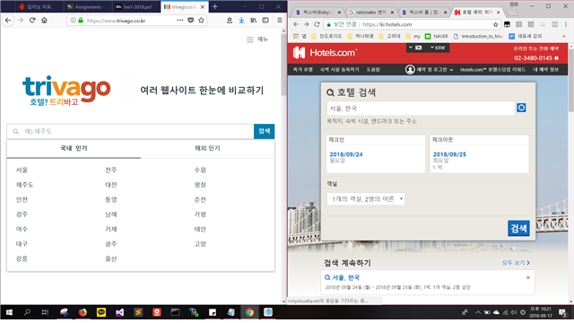
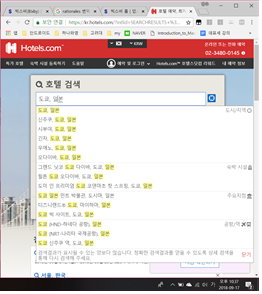
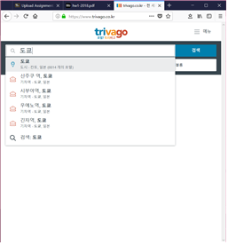
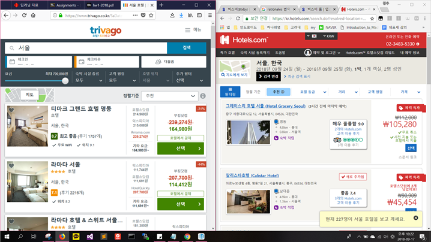
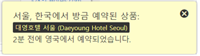
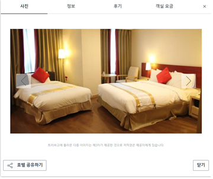
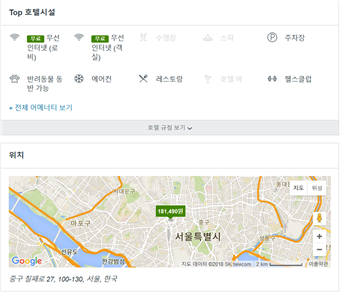
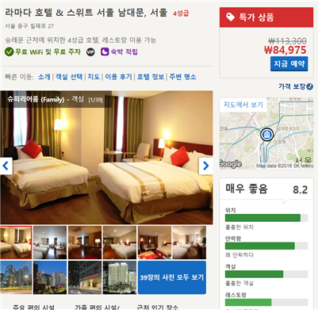

HW1. interface review(삼성 빅스비)
삼성 빅스비는 삼성에서 만든 음성인식 기반 application이다. 초기와는 다르게 지금의 빅스비는 사용자의 목소리를 분석하여 더 이해할 수 있게 성능이 향상 되었으며 사용할 수 있는 기능도 꽤 많다. 예를 들어, 유튜브에서 ~~ 재생해줘, 카톡에서 누구한테 뭐라고 메시지 전해줘, t맵에서 어디어디 찾아줘 등등 빅스비에 연동된 application들은 일정 폼대로 말하면 대부분 실행 및 검색 가능하다. 심지어는 ‘받아적어’라는 말도 삼성 노트를 알아서 열어서 받아 적을 준비를 한다.
하지만 나는 이 글을 쓰면서 빅스비를 처음 사용해 보았는데, 위에 적은 표현들은 모두 인터넷에서 찾아봐서 알게 된 것일 뿐, 아무런 별도의 설명서 없이 우리가 평소에 하던 말을 그대로 하면 제대로 이해를 하지 못한다. 다시 말하면 우리가 맨 처음 사용할 때는 어떤 기능이 연결되어 있는지, 어디까지 빅스비가 이해할 수 있는지 잘 몰라서 어떤 식으로 사용해야할지 모른다. 예를 들어, 영화관 어디에 있어? 내일 뭐 먹지? 같은 제대로 구성되지 않은 문장에 대해서는 거의 대부분 인터넷 검색으로 이어진다. 그래서 빅스비 사용법을 찾아낸 뒤에 검색을 해보니 빅스비가 이해하는 어느 정도의 틀이 있는 것 같다. 유튜브에서 ~~ 재생해줘, 내일 몇 시에 알람 맞춰줘 같은 것도 틀에 맞으면 말을 살짝 변형시켜도 알아듣는다. 하지만, 내가 생각하는 이 기능의 가장 큰 단점은 해당 기능까지 키는데 직접 실행시키는 것보다 느리다는 것이다. 또한 말을 또박또박하지 않으면 기능이 제대로 실행되지 않는다. 가령 ‘알람을 맞춰달라고 설정을 했는데, 다음날 확인해보니 알람이 안 울렸다.’하는 경우와 ‘성현이한테 메시지 보내줘’라고 했는데 성연이한테 메시지를 보내는 경우 결국 확인을 하지 않으면 정확히 보내지지 않았는지 알 수가 없고, 100%확신할 수 없다. 이 경우 결국 다시 휴대폰으로 확인을 해야 한다. 굳이 다시 확인해야하는 번거러움까지 감수하며 이 기능을 사용하려고 할까?
나는 이 삼성에서 만든 음성인식 기반 개인 secretary가 실제 secretary와는 아직까지는 전혀 따라가지 못한다고 생각한다. 실제 secretary에게 시키는 일에 대한 신뢰도보다 사람들이 휴대폰에 말을 해서 secretary일을 할 수 있게 되는 때부터 secretary를 대체할 기회가 생긴다고 생각한다. 물론 secretary와 같은 일을 할 필요는 없다. 하지만 빅스비가 할 수 있는 것은 secretary가 아직까진 모두 할 수 있다. secretary가 메시지를 대신 줄 수도 있고, 아침에 전화를 하여 알람을 키지않아도 되기 때문이다. 게다가 secretary는 ‘이 일정 적당한 때로 미뤄줘’라던지 ‘이 일정은 최대한 가능할 때로 땡겨줘’라던지 같은 다소 추상적인 말 또한 secretary가 해석하여 일을 시행한다. 이런 secretary와 말을 해도 다시 확인을 해야하는 지금 빅스비는 차이가 아직까지는 너무 크다고 생각한다. 물론 시간이 지나고, 기술이 더 발달되어 사람의 목소리를 더 잘 듣고 말하고자하는 문맥을 정확히 파악하며 추상적인 문장 또한 잘 해석하는 빅스비가 나온다면 그 때 또 확인해야할 문제라고 생각한다. 그 때쯤이면 빅스비가 secretary보다 더 나은 secretary가 될 수도 있다고 생각한다.
이런 음성 AI부분에서 좀 더 발전하여 사람들이 많이 사용하기 시작하면 UX에 대해서 전체적인 기반 자체가 바뀔 수 있다고 생각한다. 지금의 사람들은 손가락만을 이용하여 휴대폰 등을 사용하지만, 손가락을 움직이면서도 말하는 것도 할 수 있기 때문에 터치에 중심이 된 휴대폰의 기능들을 발전된 음성 AI를 사용하여 만든다면 아예 새로운 개념의 휴대폰이 나올 수 있지 않을까 생각된다.
HW2 comparative interface review(trivago, hotels.com)
1. 소개
이번 두 개의 호텔 예약사이트 중에 요즘에 광고를 많이 하고 있는 trivago와 hotels.com을 검색해보았다. 두 개의 사이트 모두 tv나 youtube에서 광고를 많이 하는 사이트이기 때문에 사람들이 어떤 것을 더 많이 쓰는지, 나의 분석에 입각하여 추측해보기로 하였다. 그리고 실제 조회 수 및 예약 수에 대한 리포트를 참고하여 내가 한 분석과 비교해 보았다.2. 분석
trivago와 hotels.com에 대한 각 동일한 기능을 하는 페이지별로 screenshot을 찍어 비교하기 쉽게 배치해 두었다.
1)index(초기화면)

 
 
 
